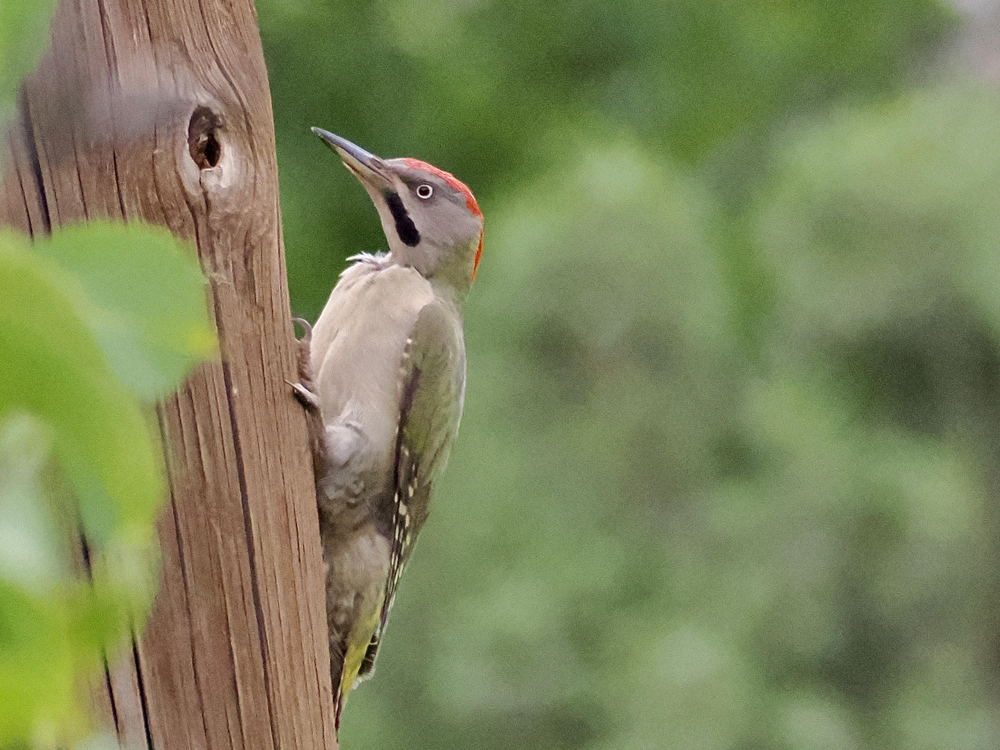

Levaillant's Woodpecker
Picus vaillantii
Other names: Levaillant's Green Woodpecker
Order: Piciformes
Family: Picidae

North African endemic, the only green woodpecker in its range. Similar to Eurasian Green Woodpecker, but lacks the black mask around the eyes. Female lacks the red on the moustachial stripe.